Menu: Autoinspeção e Auditoria (o título da tela é "Cadastro Autoinspeção e Auditoria da Qualidade") · Situação do manual: Em ajuste · Fonte dos prints: versão nova.
Para que serve
Cadastra o programa de autoinspeção ou auditoria da empresa: nome, tipo de auditoria, frequência, se está ativo e quais roteiros (modelos de perguntas) ele usa. A tela não calcula nenhuma data a partir da frequência; o efeito dela na Programação depende da tela 12 (não testado). O cadastro ativo é escolhido depois na Programação Autoinspeção e Auditoria.
Antes de começar (o que precisa existir)
| O que precisa existir | Para quê | Onde se cadastra |
|---|---|---|
| Roteiro ativo (um ou mais) | É ligado ao cadastro pelo bloco "Roteiro" | Autoinspeção e Auditoria > Cadastro de Roteiro |
| Nome, tipo de auditoria e frequência | São obrigatórios | (preparar antes) |
| Função da tela no perfil | Sem ela, PESQUISAR e Incluir ficam desabilitados | Administração > Perfil |
Passo a passo
- Abrir a tela. No menu Autoinspeção e Auditoria, clique em Cadastro Autoinspeção e Auditoria. O filtro tem Código, Descrição, Ativo* (Sim já marcado, ou Não), Data Início e Data fim, Tipo Auditoria (TODOS) e Frequência (TODAS); botões PESQUISAR, LIMPAR e Incluir.
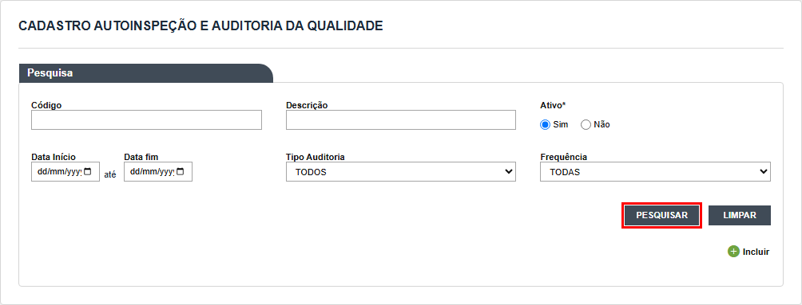
A imagem mostra o filtro e os botões. Com Ativo = Sim a lista traz só os cadastros ativos; para ver os inativos marque Não (não há "todos"). O filtro de Código é exato (aceita "AI9131" e "9131", mas não "913"); a Descrição aceita parte do nome, sem diferenciar maiúsculas; Data Início e Data fim filtram pela data de criação do cadastro (início maior que fim volta "A pesquisa não retornou nenhum resultado." sem aviso).
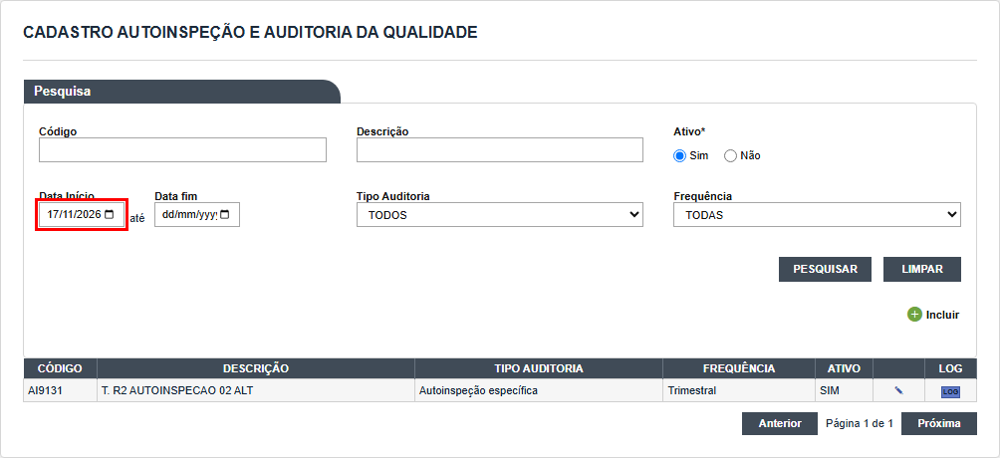
A imagem mostra o filtro Data Início = 17/11/2026 e a lista só com cadastros criados a partir dessa data.
- Pesquisar. A grade mostra CÓDIGO, DESCRIÇÃO, TIPO AUDITORIA, FREQUÊNCIA, ATIVO e os ícones Editar (lápis) ou Visualizar (lupa) e Log. Não existe Excluir.
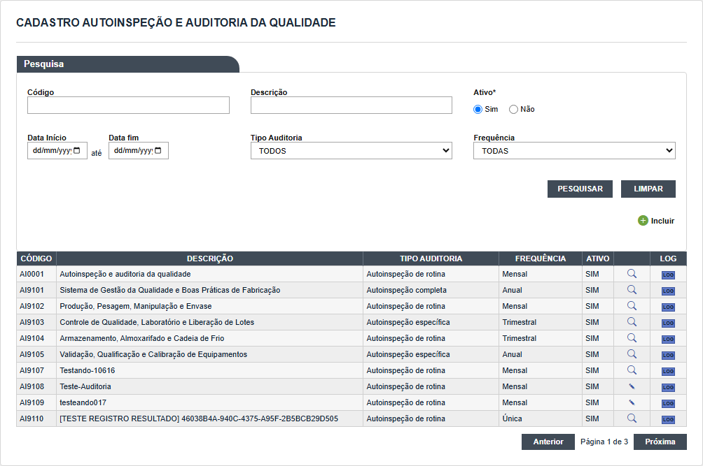
A imagem mostra a grade com as linhas AI0001 a AI0005 (com lupa) e as demais (com lápis e Log). A lupa aparece em várias linhas (AI0001, AI9101 a AI9105, AI9107, AI9110 e AI9114) no lugar do lápis; a lupa aparece quando o cadastro tem uma programação EM CURSO (provado em 17/11/2026 na Programação Autoinspeção e Auditoria: o cadastro AI9132 passou de lápis para lupa depois de a programação iniciar; o AI9133, só com programação PROGRAMADA, continuou com lápis). As linhas AI0001 e AI9101 a AI9114 desta imagem são de cadastros antigos com programação em curso; essa ligação não foi conferida linha a linha.
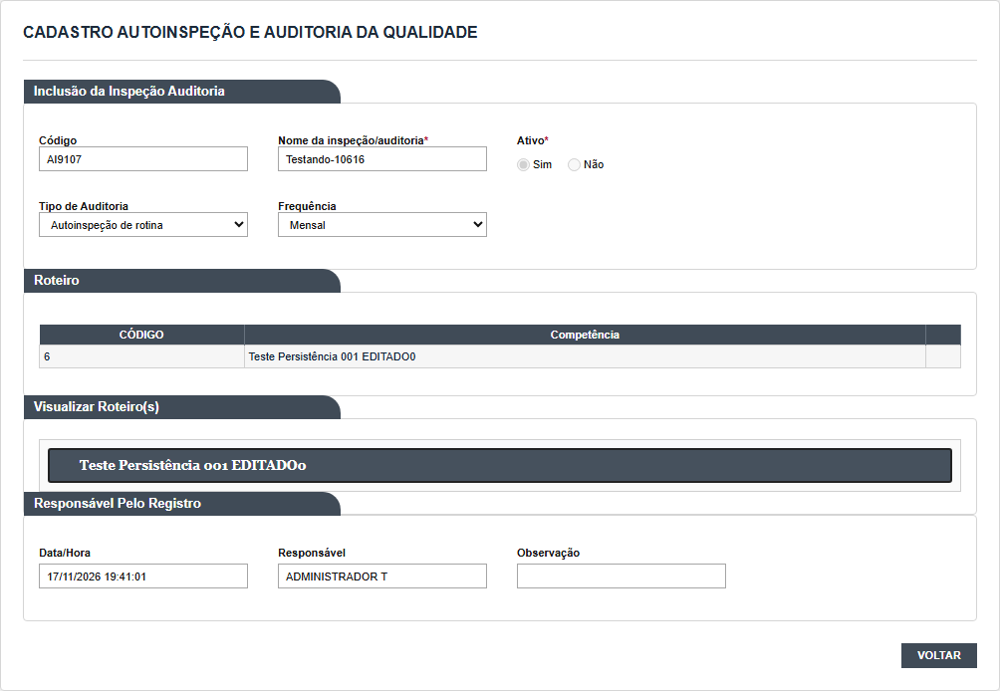
A imagem mostra o cadastro AI9107 aberto pela lupa: campos desabilitados e só o botão VOLTAR.
- Incluir. Clique em Incluir. O quadro se chama "Inclusão da Inspeção Auditoria", com Código, Nome da inspeção/auditoria*, Ativo* (Sim), Tipo de Auditoria e Frequência (ambos começam em TODAS) e o quadro "Visualizar Roteiro(s)" vazio.
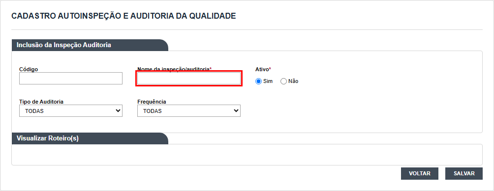
A imagem mostra o formulário vazio com VOLTAR e SALVAR. Tipo e Frequência não têm asterisco, mas são obrigatórios, e "TODAS" não vale.
- Salvar vazio (para conhecer as mensagens). Clique em SALVAR.
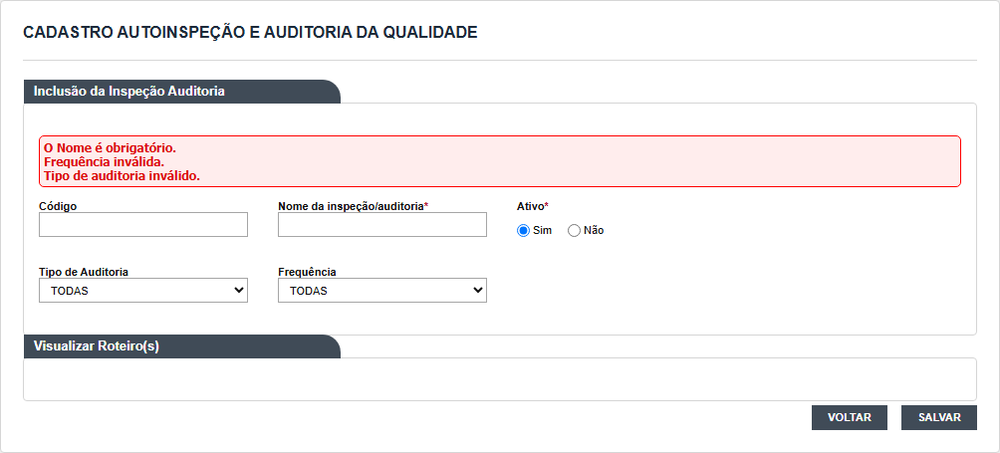
A imagem mostra a faixa vermelha com "O Nome é obrigatório.", "Frequência inválida." e "Tipo de auditoria inválido." (cada uma aparece sozinha ou juntas).
- Preencher e salvar. Digite o nome, escolha o tipo (Autoinspeção de rotina, completa, específica ou Auditoria interna) e a frequência (Mensal, Trimestral, Semestral, Anual, Eventual ou Única), e clique em SALVAR. A tela não pede confirmação: grava direto.
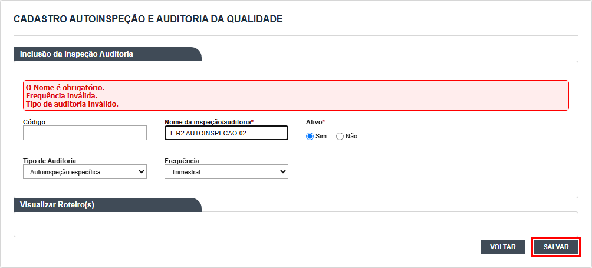
A imagem mostra o nome preenchido, Tipo "Autoinspeção específica" e Frequência "Trimestral", prontos para salvar.
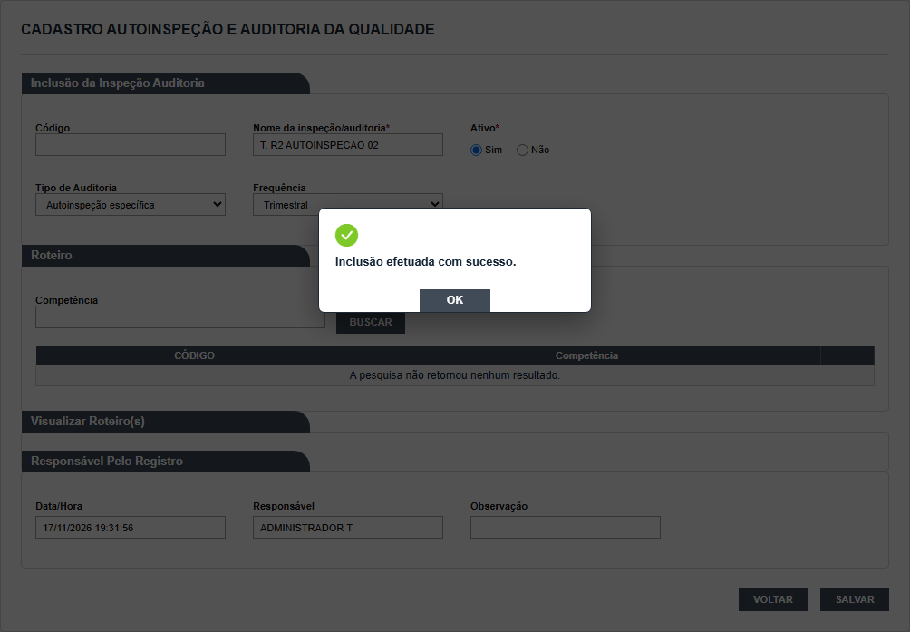
A imagem mostra a caixa "Inclusão efetuada com sucesso." (sem pergunta de confirmação antes) e, ao fundo, o formulário com os quadros novos Roteiro e Responsável Pelo Registro. O nome repetido não é recusado (DV-GQ-N-023).
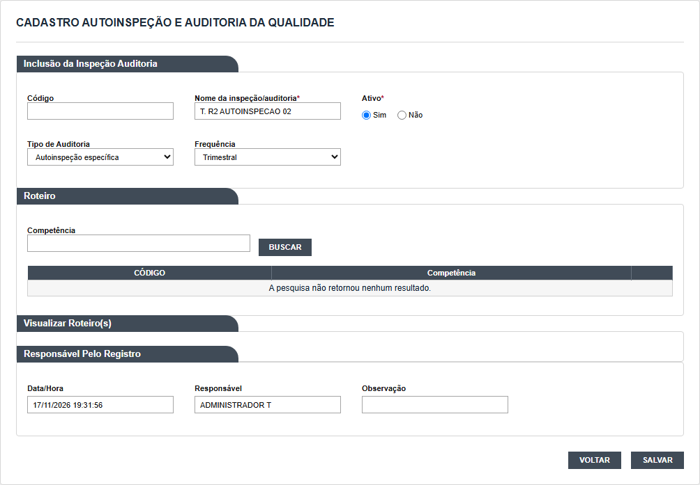
A imagem mostra o formulário depois de gravar, com os quadros Roteiro, Visualizar Roteiro(s) e Responsável Pelo Registro. O campo Código fica vazio até o cadastro ser reaberto pelo lápis, embora o cadastro já exista na lista.
- Ligar um roteiro. No quadro Roteiro, digite parte do título em Competência e clique em BUSCAR. Abre a janela "Roteiros" (só roteiros ativos). Clique no título e em INCLUIR; o roteiro entra na tabela (CÓDIGO e Competência). O vínculo grava na hora do INCLUIR da janela, sem precisar clicar em SALVAR, sem confirmação, sem justificativa e sem mensagem (DV-GQ-N-067).
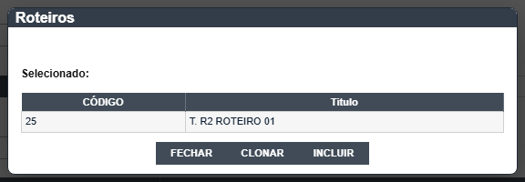
A imagem mostra a janela "Roteiros" com a lista de roteiros ativos e os botões FECHAR, CLONAR e INCLUIR.
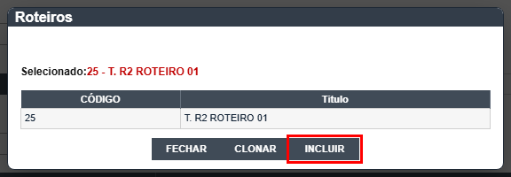
A imagem mostra o roteiro 25 em "Selecionado:" e o botão INCLUIR.
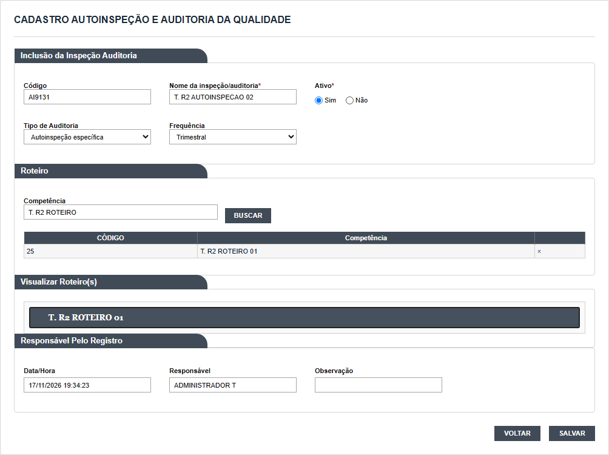
A imagem mostra o roteiro 25 na tabela, com o × para desligar, e o quadro "Visualizar Roteiro(s)" com o título do roteiro. O servidor já gravou o vínculo neste momento.
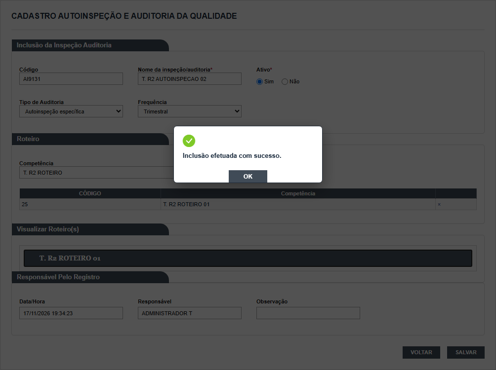
A imagem mostra "Inclusão efetuada com sucesso." depois de clicar em SALVAR com o roteiro na tabela (o vínculo já estava gravado).
A imagem mostra o cadastro reaberto pelo lápis com o roteiro 25 na tabela e em Visualizar Roteiro(s).
Erro passageiro da busca. Na primeira busca apareceu a faixa "Não foi possível pesquisar roteiros." sem causa visível; não se repetiu em cinco buscas seguintes (nota de ambiente, sem ficha).
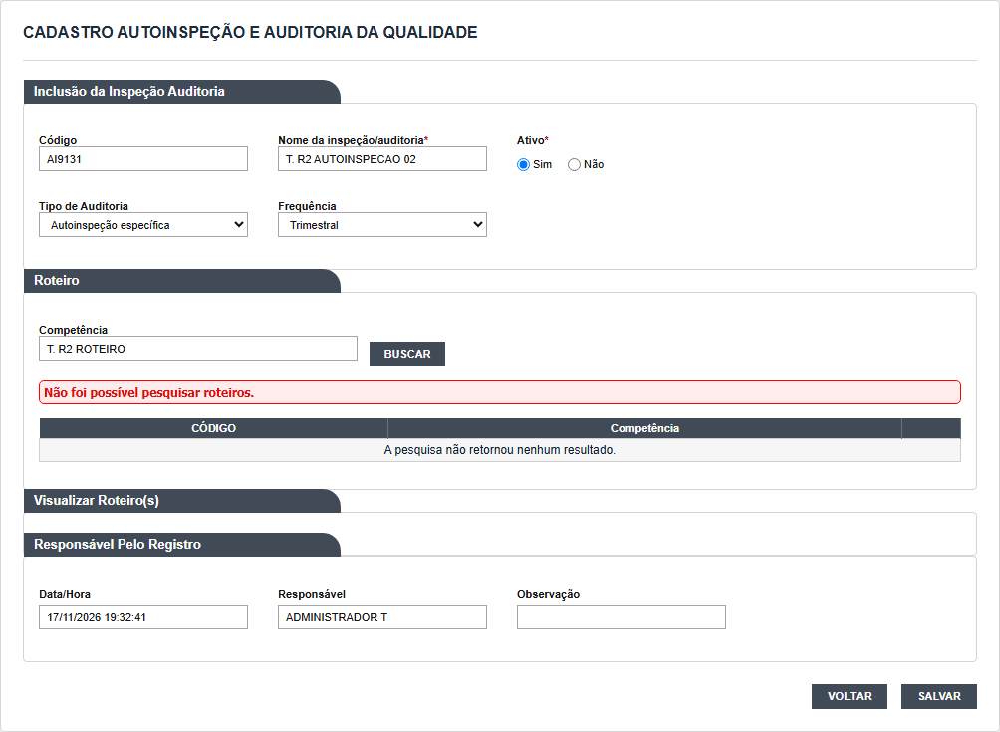
A imagem mostra a faixa "Não foi possível pesquisar roteiros.".
CLONAR. Na janela Roteiros, com um roteiro já ligado selecionado, CLONAR não faz nada na tela: o servidor recusa com "O roteiro possui vínculo ativo com uma autoinspeção ou auditoria." e nenhuma mensagem aparece (DV-GQ-N-066). O que o CLONAR faz num roteiro sem vínculo não foi testado.
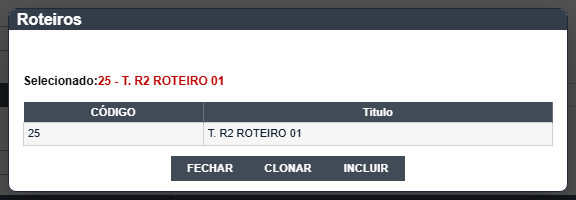
A imagem mostra a janela "Roteiros" com o roteiro 25 selecionado depois de clicar em CLONAR: nada mudou e não há mensagem.
- Desligar um roteiro. Clique no × da linha. O desligamento grava na hora, sem pergunta, justificativa nem mensagem: clicar no × e depois em VOLTAR sem salvar já desliga o roteiro (ao reabrir, a tabela está vazia) (DV-GQ-N-067).
A imagem mostra a tabela de roteiros vazia depois de clicar no ×, sem confirmação nem mensagem. Se o desligamento é aceito com programações ativas usando o roteiro (DV-GQ-N-048, Alta) não foi testado nesta tela: depende da Programação Autoinspeção e Auditoria (tela 12).
- Alterar ou inativar. Na lista, clique no lápis, mude os dados (ou Ativo = Não) e salve. A tela não pede justificativa: o sistema grava sozinho "Alteração de registro." (e "Inclusão do Roteiro -
" ao ligar, conforme o teste de 20/10/2026). A mensagem diz "Inclusão efetuada com sucesso." numa alteração e o quadro continua "Inclusão da Inspeção Auditoria" (DV-GQ-N-020).
A imagem mostra o cadastro AI9131 aberto pelo lápis, com o código preenchido e o quadro "Inclusão da Inspeção Auditoria".
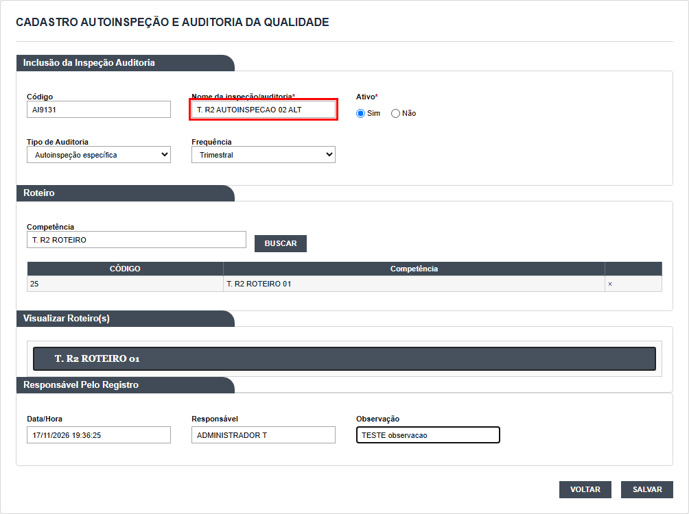
A imagem mostra o cadastro com o nome mudado, a observação e o roteiro ligado, pronto para salvar.
A imagem mostra "Inclusão efetuada com sucesso." depois de ALTERAR, sem justificativa, e o quadro ainda chamado "Inclusão da Inspeção Auditoria".
Para inativar, marque Ativo = Não e salve:
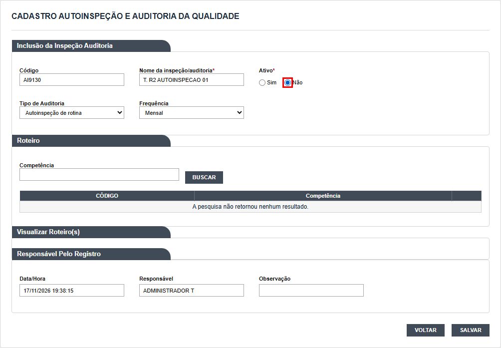
A imagem mostra o cadastro AI9130 com Ativo = Não, pronto para salvar.
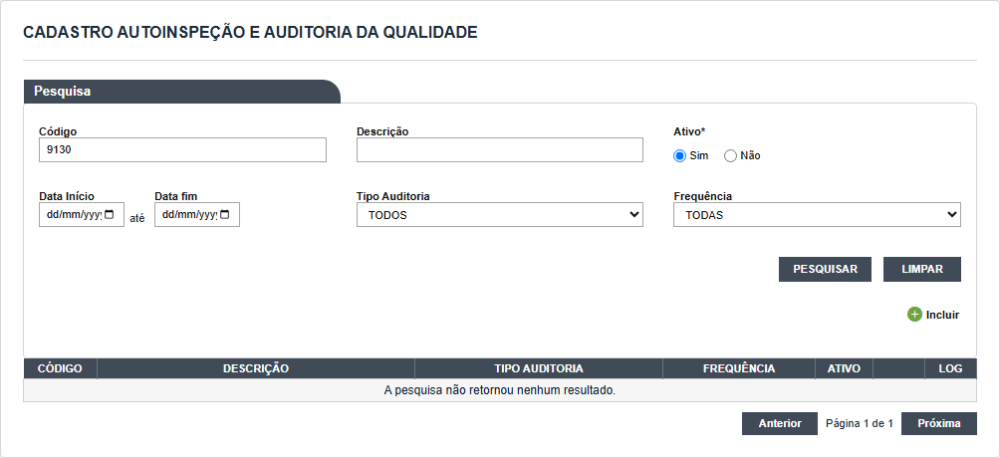
A imagem mostra a lista vazia para o código 9130 com o filtro Ativo = Sim.
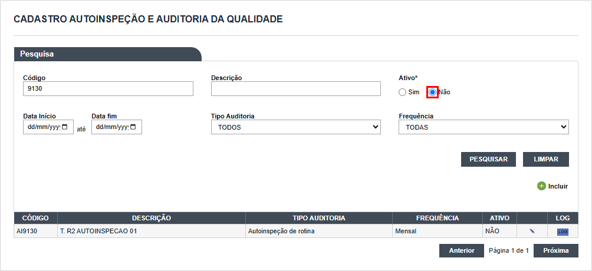
A imagem mostra o cadastro 9130 com ATIVO = NÃO ao marcar Não no filtro.
- Ver o histórico. Na lista, clique em Log.
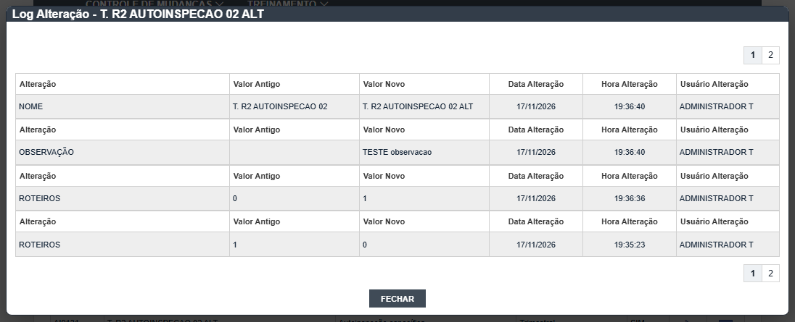
A imagem mostra a janela "Log Alteração" do cadastro AI9131 com a inclusão e a alteração, com colunas Alteração, Valor Antigo, Valor Novo, Data, Hora e Usuário, sem coluna de justificativa; o histórico tem duas páginas. NOME, OBSERVAÇÃO e ROTEIROS aparecem com nome legível; o roteiro ligado ou desligado aparece só como contagem (ROTEIROS 0 para 1, 1 para 0), sem dizer qual roteiro (DV-GQ-N-018, Alta).
Ícones e botões da lista
| Ícone ou botão | O que faz | Quando aparece |
|---|---|---|
| PESQUISAR / LIMPAR | Filtra / esvazia | Sempre |
| Incluir (+ verde) | Abre o formulário vazio | Para quem pode incluir |
| Lápis | Edita | Em cada linha |
| Log | Histórico | Em cada linha |
| Lupa | Abre o cadastro só para leitura (campos desabilitados, só VOLTAR) | No lugar do lápis, quando o cadastro tem programação EM CURSO (provado na tela 12, em 17/11/2026) |
Botões e ações
| Botão | O que faz | Observação |
|---|---|---|
| SALVAR | Grava o cadastro (sem pergunta de confirmação) | O vínculo de roteiro já foi gravado antes |
| VOLTAR | Volta à lista sem gravar | |
| BUSCAR (Competência) | Abre a janela Roteiros | |
| INCLUIR / FECHAR / CLONAR (janela) | Põe o roteiro na tabela e grava o vínculo na hora / fecha / copiaria o roteiro | CLONAR de roteiro já ligado não faz nada (DV-GQ-N-066); em roteiro sem vínculo não foi testado |
| × (tabela) | Desliga o roteiro na hora | Sem pergunta, justificativa nem mensagem (DV-GQ-N-067) |
Mensagens do sistema
| Mensagem | Quando aparece |
|---|---|
| Inclusão efetuada com sucesso. | Ao salvar inclusão, alteração ou inativação (e ao salvar com roteiro na tabela) |
| Não foi possível pesquisar roteiros. | Erro passageiro na busca de roteiros (visto uma vez) |
| O roteiro possui vínculo ativo com uma autoinspeção ou auditoria. | Resposta do servidor ao CLONAR, não mostrada na tela |
| O Nome é obrigatório. / Frequência inválida. / Tipo de auditoria inválido. | Salvar incompleto |
| A pesquisa não retornou nenhum resultado. | Tabela de roteiros ou lista sem linhas |